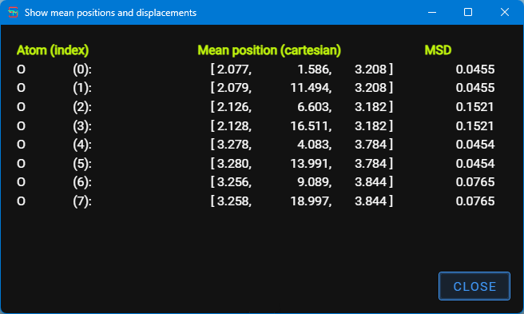

For the selected atoms in the trajectory module, this window displays the mean position and mean squared displacement from these atoms.
The positions are in cartesian coordinates if the structure has no unit cell defined, otherwise they are fractional coordinates. The kind of coordinates are show in the column header.
This window is created to stay always on top of the other windows.
